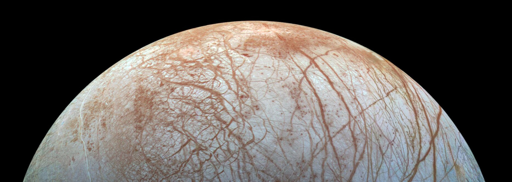
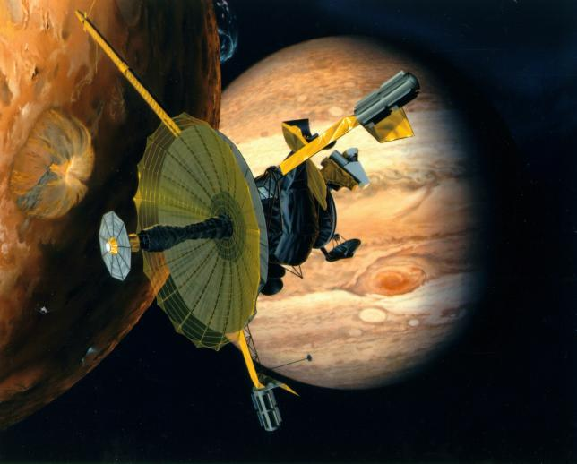

Jupiter's Moons
 There are several types of bodies in the Solar System. The Sun is our local star, and it has planets, dwarf planets, asteroids and comets orbiting it. Some lucky planets also have smaller bodies orbiting them; these are known as ‘natural satellites’. The Moon is our only natural satellite, but we have quite a few artificial satellites in orbit now!
Planets like Venus and Mercury have no natural satellites of their own, but some of the gas giant planets like Jupiter and Saturn have several! After the Sun, Jupiter is the second most massive object in the Solar System; for this reason, Jupiter has A LOT of satellites! We often refer to the natural satellites of other planets as ‘moons’, even though no other ‘moon’ is actually called Moon. Confusing? Maybe!
Jupiter has 79 ‘moons’. The first four to be discovered are known as the Galilean Satellites, as they were first observed by Galileo Galilei with his newly invented telescope in 1609. The Galilean Satellites are also Jupiter’s largest ‘moons’; they are called Callisto, Ganymede, Io and Europa.

Jupiter’s moons do not produce any visible light of their own, so we can describe them as non-luminous. So how come we can still see them just by looking through a telescope?
Just like our Moon, Jupiter’s satellites reflect visible light from the Sun. This is how we can see all objects in the Solar System, as the Sun is the only self-luminous object here! But this does mean that a visible light telescope is appropriate for observing the four Galilean Satellites.
But wait! There’s more! You know how in movies sometimes people will use ‘thermal imaging goggles’ to look for people hiding in the dark? The way they work is by detecting the infrared light being given off by people. The amount of infrared radiation emitted by an object depends on its temperature; since people’s bodies are warmer than their surroundings, thermal imaging goggles help us to spot hidden perps!
Jupiter’s moons also give off some infrared radiation, especially Io. Io is the most volcanically active body in the Solar System, so observing it with an infrared telescope might help you to see where on its surface the most active volcanoes are.